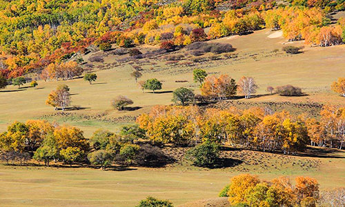
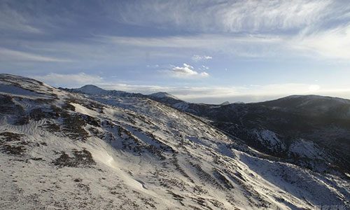

 
images 1
The is images.Width is 500px,Height is 300.
images 2
The is images.Width is 500px,Height is 300.
images 3
The is images.Width is 500px,Height is 300.
images 4
The is images.Width is 500px,Height is 300.
images 5
The is images.Width is 500px,Height is 300.